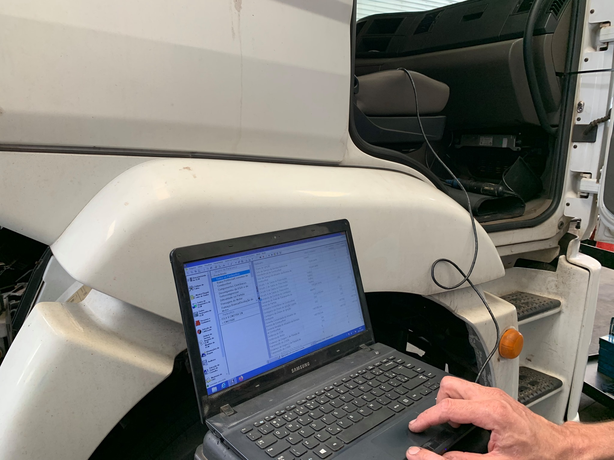
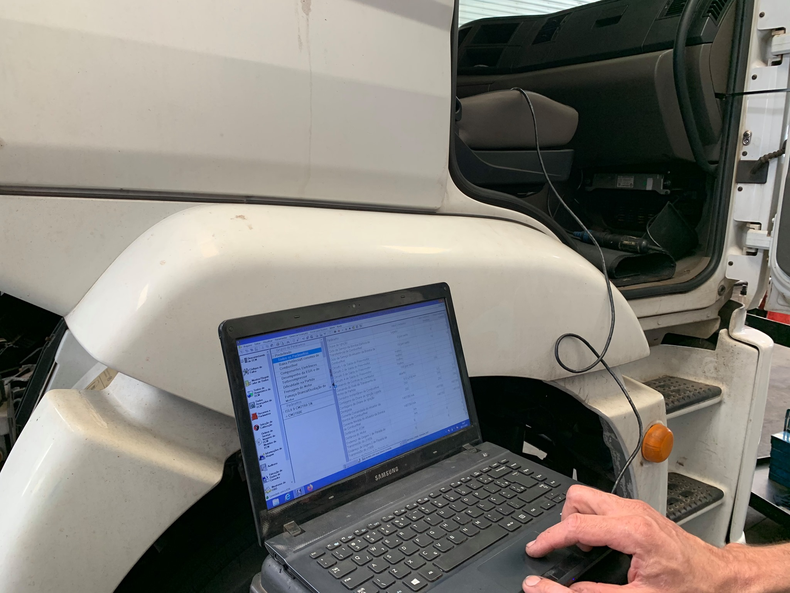

O Diagnóstico Computadorizado é um serviço essencial para identificar rapidamente problemas no seu veículo, utilizando equipamentos de alta tecnologia. Na MotorTech, nossos técnicos conectam o veículo a sistemas de diagnóstico avançados, que fazem uma varredura completa em todos os sistemas eletrônicos e mecânicos, identificando falhas com precisão milimétrica. Este serviço é fundamental para detectar problemas que podem não ser visíveis a olho nu, garantindo reparações precisas e evitando custos adicionais.
 

Os valores podem variar de acordo com a sua necessidade.